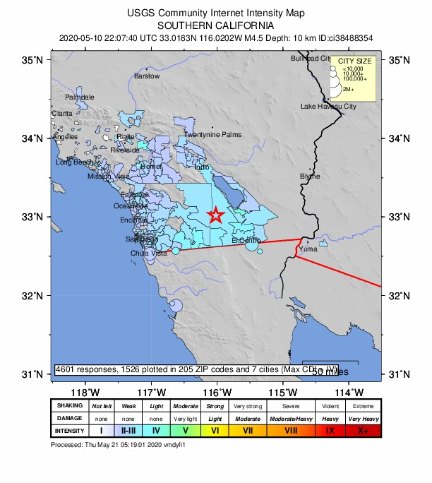
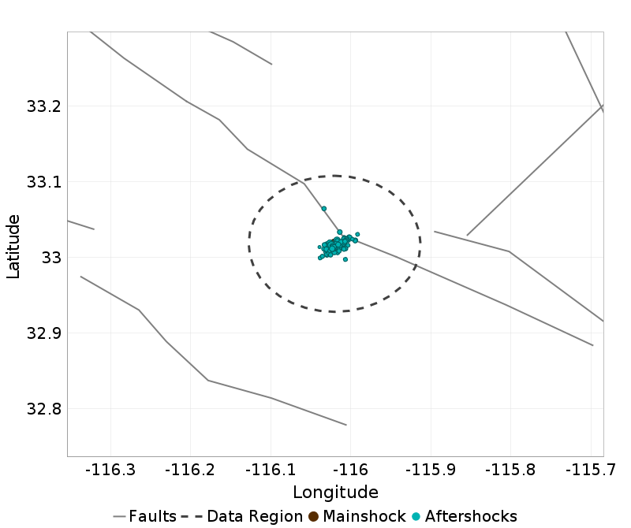
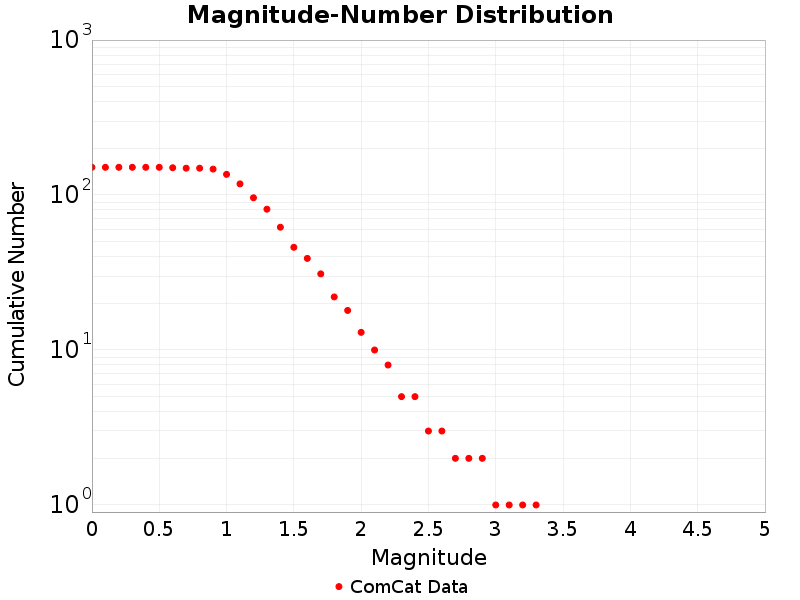

Information and plots in the section are taken from the USGS event page, accessed through ComCat.
| Field | Value |
|---|---|
| Magnitude | 4.54 (mw) |
| Time (UTC) | Sun, 10 May 2020 22:07:40 UTC |
| Time (PDT) | Sun, 10 May 2020 15:07:40 PDT |
| Location | 33.018333, -116.020164 |
| Depth | 10.16 km |
| Status | reviewed |
|  |
| |
2 UCERF3 fault sections are within 10km of this event's hypocenter:
These plots show the aftershock sequence, using data sourced from ComCat. They were last updated at 2020/05/11 06:14:49 UTC, 8.12 hours after the mainshock.
54 M≥0 earthquakes within 10 km of the mainshock's epicenter.
| First Hour | To Date | |
|---|---|---|
| M 0 | 16 | 54 |
| M 1 | 16 | 54 |
| M 2 | 2 | 6 |
This plot shows the magnitude vs. time evolution of the sequence. The mainshock is ploted as a brown circle, and aftershocks are plotted as cyan circles.

Map view of the aftershock sequence, plotted as cyan circles. The mainshock is plotted below as a brown circle, but may be obscured by aftershocks. Nearby UCERF3 fault traces are plotted in gray lines, and the region used to fetch aftershock data in a dashed dark gray line.

This plot shows the cumulative number of M≥0 aftershocks as a function of time since the mainshock.

These plot shows the magnitude-number distribution of the aftershock sequence thus far. The left plot gives an incremental distribution (the count in each magnitude bin), and the right plot a cumulative distribution (the count in or above each magnitude bin).
| Incremental MND | Cumulative MND |
|---|---|
 |  |